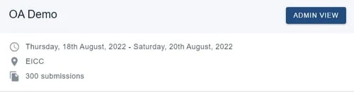
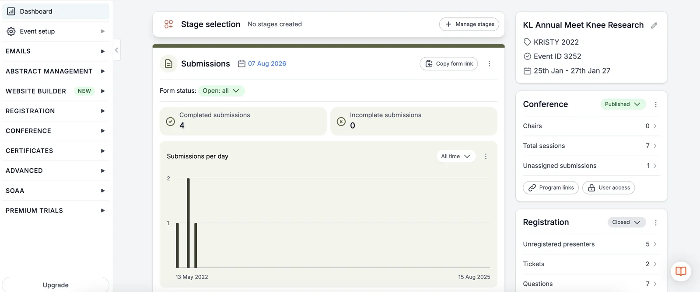
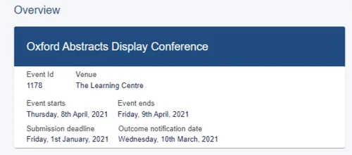
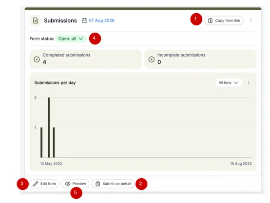
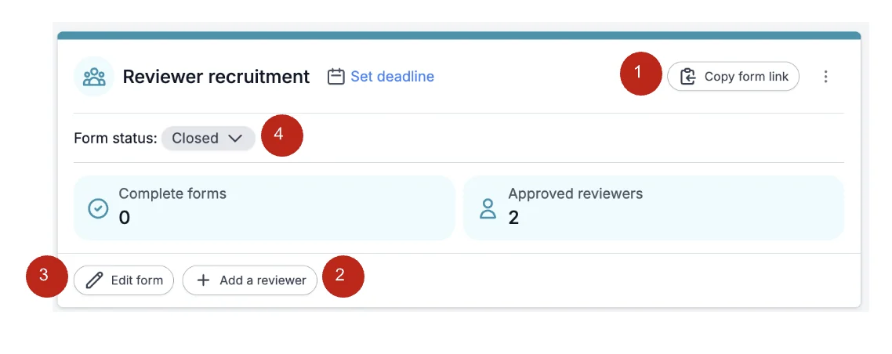
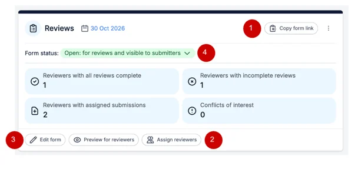
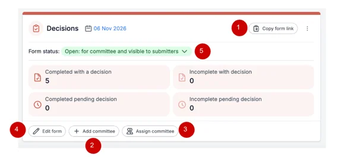
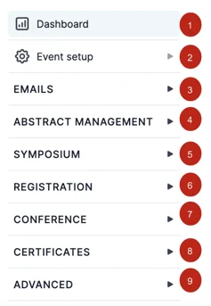
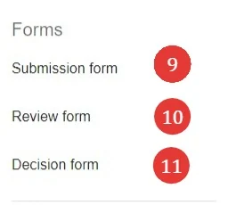
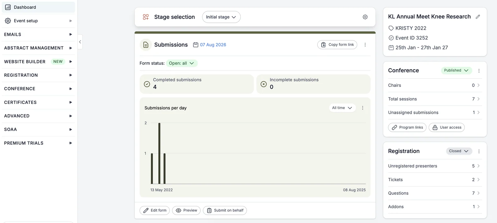

Event dashboard
For event organisersNot an organiser?
The event dashboard is the portal where you access the tools you'll need for all aspects of your event.#
When you log into the Oxford Abstracts home page, your first screen is your personal dashboard. If you have been set up as an event administrator for an event, you will see it listed in the Events section, with an Admin view button.
Click Admin view to get started.

The elements will adjust according to the size of your screen, whether a phone, PC or a tablet.
The dashboard is split - the working elements in the main panel of the window, the navigation menu on the left.

The Main Panel#
Overview of the event details
The key details for your event including Title, Event ID, Venue, Date(s), Submission deadline and Outcome notification date, etc. This can be amended by clicking Event details.

Overview of submissions, reviews and decisions
Clicking on these buttons will take you straight to the tables for Submissions, Reviews and Decisions, respectively.
In the case of Submissions and Decisions, they also give a summary of the status of the submissions in these separate stages.
Hovering over some of the icons will give more detailed explanations and guidance.
Submissions
This panel contains the controls for submission status.
1) Submission form link - Copy and paste into any website or emails publicising the event
2) This button will submit an abstract on someone else's behalf
4) Submission status, where you can open and close abstract submission
5) Preview your submission form

Reviewer Recruitment
This panel allows you to quickly add reviewers and to have an overview of how many reviews have been completed.
Here you can:
1) Copy the reviewer form link to send to reviewers to complete to help you decide if they should be accepted to review etc
2) Add your reviewers
3) Edit the reviewer form
4) Either open or close the chance for new reviewers to send their review for to you

Reviews
This panel contains the controls for reviews.
Here you will find the:
1) Review form link, which you can copy and paste into emails or a website
4) Review status - where you can open and close reviewing.

Decisions
This panel contains the controls for the decision-making stage. Here you can find the
1) Committee decisions form link, which you can copy and paste into any website or emails publicising the event
2) The link to add and invite committee members
3) Assign specific categories to committee members

The navigation menu#
NB, The items in the navigation menu will vary depending on the package you have.

2) Event Setup
Event Details view/edit event information relating to the event including title, venue, date(s), logo, email address, phone number, submission deadline and notification date.
Users - invite/remove event administrators, reviewers and committee members. and create your event theme.
Theme - Select colours, add your logo and background, add information to event panel.
3) Emails
Edit and send emails, view sent logs and verify sender.
4) Abstract Management
Submissions - Form & Setup and view the submissions table.
Reviews - Form & setup, view reviews by submission or by reviewer.
See also The reviews tables.
Decisions - Form & Setup, view the decisions table, view reports and download them.
5) Symposium
View Dashboard
Submissions - Form & Setup & view table.
Reviews - Form & setup, view reviews by symposium or by reviewer.
Decisions
6) Registration
Tickets -Create tickets and form, create your ticket details page and configure finance options.
Publish - Publish your tickets.
Registrations - View attendee registrations and transactions.
7) Conference
Program -Build your program, create sessions, view program bookings, connect a Zoom account.
Configure -Create your conference homepage, add exhibitors, set up networking & comment moderation.
8) Certificates
Design and distribute your certificates.
9) Advanced
Committee Filter - Assign Committee Members
Book Builder
Spreadsheet Builder
Forms#

9) Designing the submission form
11) Designing the decision form

Common questions#
Event administrator dashboard#
Follow the link in the email you receive inviting you to become an event administrator to get started.#
Register for an Oxford Abstracts account or log in if you already have an account.
When you log into the Oxford Abstracts home page, your first screen is your dashboard. If you have been set up as an event administrator for an event, you will see it listed in the Events section, with an Admin view button.
Click Admin view to view/edit the event.
You will then be directed to the event dashboard.


Didn't solve it? Ask our support team
No question is too small, and there's no charge for asking. Raise a ticket and someone who knows the software will pick it up.
Did this page solve it?
Thanks — this helps us fix it.